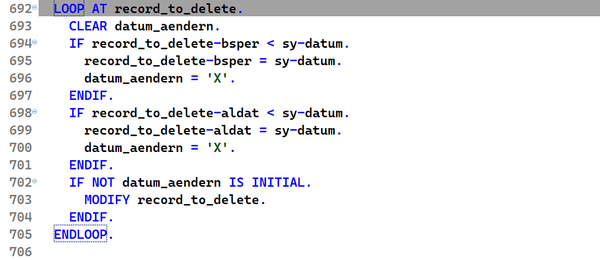

ABAP Quick Fixes - Replace LOOP AT ITAB with Header Line
Using this quick fix, you can replace old fashioned LOOP AT ITAB with header line with
LOOP AT ITAB ASSIGNING FIELD-SYMBOL(<ITAB>)
LOOP AT ITAB REFERENCE INTO DATA(ref_ITAB)
LOOP AT ITAB INTO DATA(wa_ITAB)
I case of the first two quick fixes, when MODIFY or DELETE statement is found inside the loop,
it is commented out. In case of LOOP AT ITAB INTO DATA, it is adjusted to the form
MODIFY ITAB FROM wa_ITAB.
